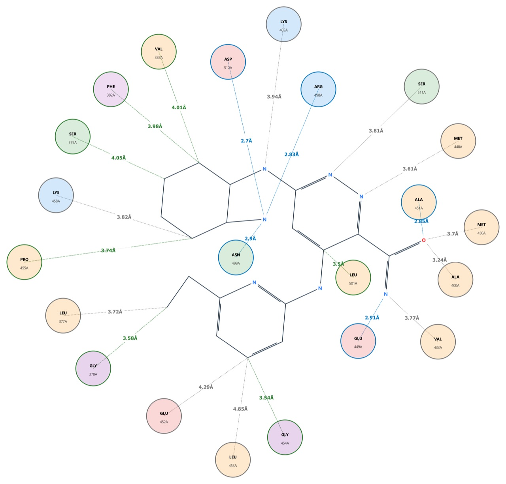

- Toxicity prediction In development
- Ensemble machine-learning models with explainable AI.
- Molecular descriptors
- More than 123,000 interpretable descriptors per molecule, including chirality-aware ones.
- GPU computing
- Descriptor calculation on NVIDIA GPUs, alongside CPU multiprocessing.
- Molecular docking
- Genetic-algorithm search with Vina-style scoring, running offline.
- Modelling and QSAR
- Force-field optimisation, partial charges, QSAR models and chemical-space maps.

A docked ligand's contacts drawn in PyChem-Pro, with distances in ångström.